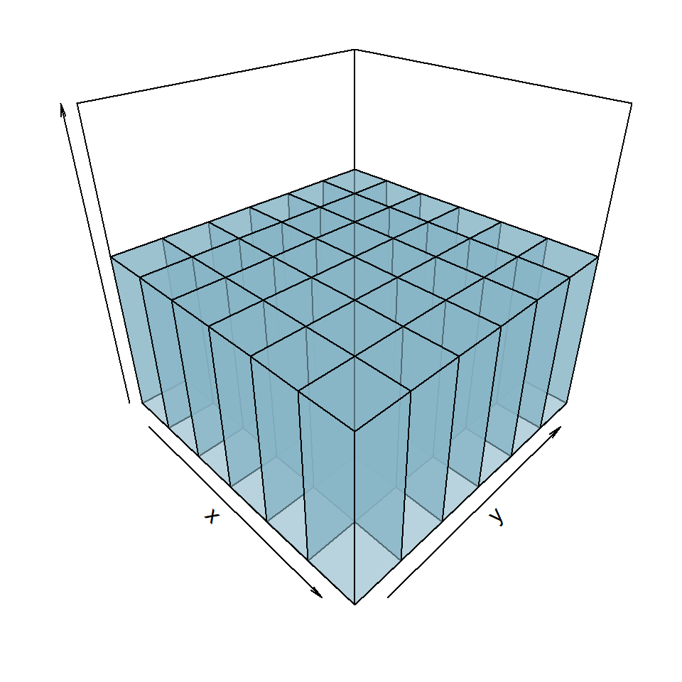
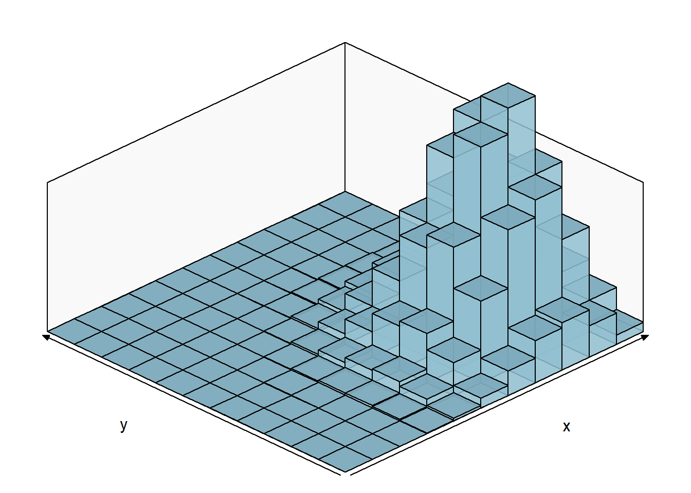
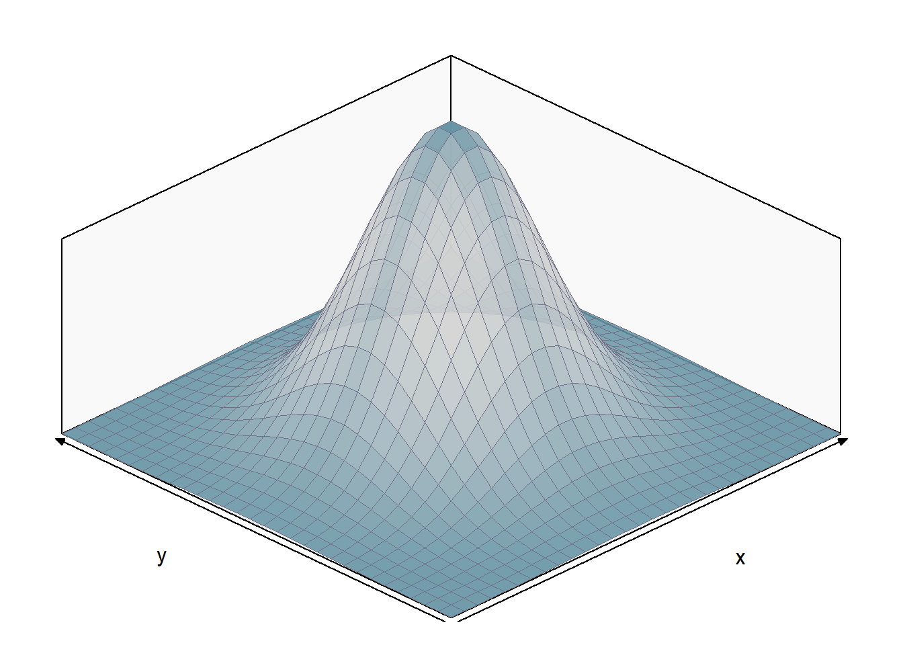
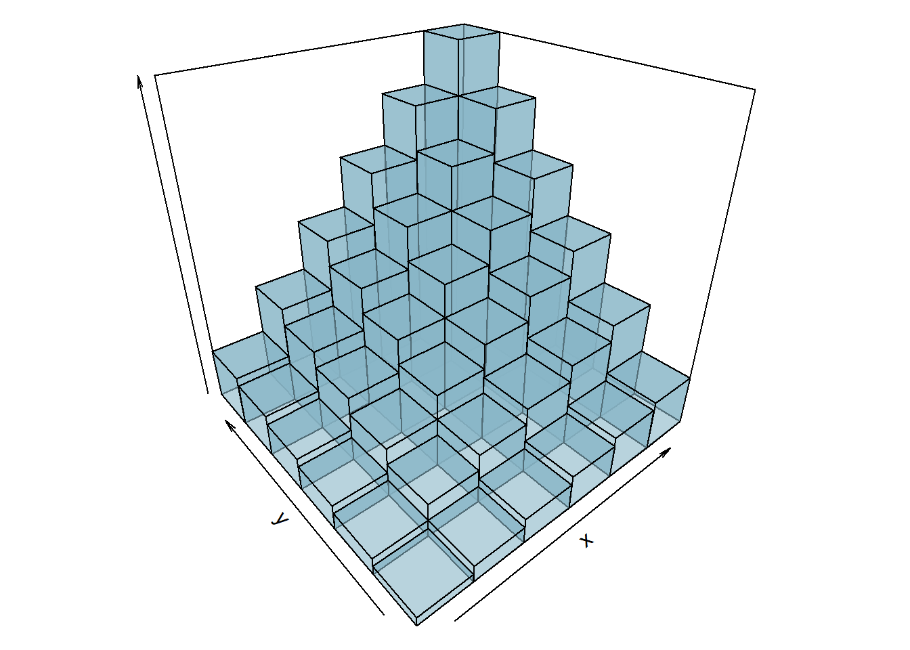
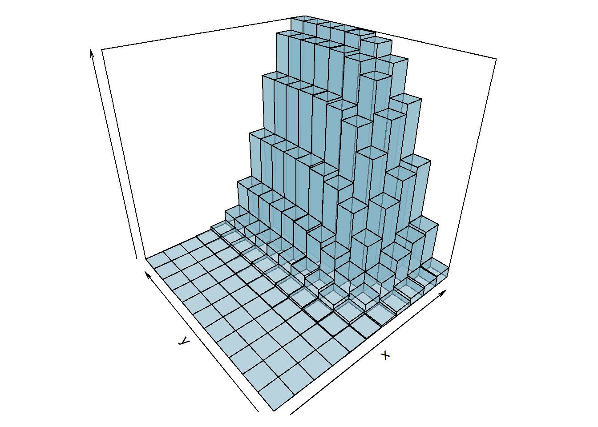

8 Variáveis Aleatórias Multidimensionais
Conceitos Inciciais
8.1 Introdução
Até o momento nos interessou observar apenas uma característica de um experimento. Por exemplo, a altura média dos alunos do curso de estatística. Podemos também estar interessados em mais uma característica adicional, como o peso dos alunos do curso de estatística.
Portanto, queremos observar duas características de forma simultânea dos alunos: altura e peso. Ou seja, duas características simultaneamente do mesmo experimento \(\epsilon\).
Considere o experimento de jogar dois dados não viciados de forma simultânea. Define-se duas variáveis aleatórias: \(X\) o número que aparece no dado 1 e \(Y\) o número que aparece no dado 2. Assim, temos o seguinte espaço amostral com 36 elementos (6x6):
\[\begin{array}{ccc} \Omega = { \{(1,1),(1,2),(1,3),...,(6,6)\} } \end{array}\]
Como o dado é não viciado cada evento (x,y) tem a mesma probabilidade de ocorrência de 1/36. Assim, a função de probabilidade bivariada é:
\[\begin{array}{ccc} p(x_{i},y_{j})=P(X=x_{i},Y=y_{j})=1/36 \end{array}\]
para \(i=1,...,6\) e \(j=1,...6\).
Assim como no caso unidimensional pode-se construir um histograma. Com base no exemplo acima, podemos fazer o seguinte histograma tridimensional para o par de dados \(X\) e \(Y\), ou seja, a distribuição conjunta de \((X,Y)\):
Com base nessa ideia podemos fazer a seguinte definição:
Agora possuímos não mais um espaço unidimensaional \(R_{x}\) como anteriormente visto, mas sim bidimensional, ou seja, o contradomínio da variável aleatória será \(R_{xy}\) e cada resultado \(X = X(\omega)\) e \(Y = Y(\omega)\) pode ser representado como um ponto \((x,y)\) no plano euclidiano. Podemos dividir os resultado de um experimento em dois tipos, os discretos e os contínuos. Vejamos abaixo esses dois tipos de resultados.
8.2 Distribuição de Probabilidade
8.2.1 Variáveis Aleatórias Discretas
São variáveis que conseguimos colocar em lista, seja ela finita ou infinita. Assim, o vetor (X,Y) será uma variável aleatória discreta bidimensional ou vetor aleatório bidimensional se os valores possíveis puderem ser representados por \((x_{i},y_{i})\), \(i=1,...,n,...\); e \(j=1,2,...,m,...\)
Como no caso unidimensional tem-se, podemos definir a distribuição de probabilidade conjunta de \((X,Y)\)
Com base na definição anterior podemos definir agora o que seria a função distribuição conjunto, ou seja:
Para fixarmos as definições apresentadas acimas, e colocarmos os conceitos em prática, vamos realizar dois exemplos.
8.2.1.1 Visualização Gráfica
Vejamos agora alguns gráficos de variáveis aleaórias bidimensionais:
BINOMIAL:
Considere a variável aleatória \((X,Y)\) com distribuição binomial e a probabilidade de sucesso de \(X\) é igual a 0.75 e de \(Y\) igual a 0.25 com 10 rodadas:

POISSON
Considere a variável aleatória \((X,Y)\) com distribuição de poisson e o valor esperado de \(X\) igual a 7, de \(Y\) igual a 4 e a covariância é 3 (a frente veremos esse conceito):

8.2.2 Variáveis Aleatórias Contínuas
São variáveis que não conseguimos listar, pois existem infinitos valores entre dois pontos. Assim,o vetor \((X,Y)\) será uma variável aleatória contínua se puder tomar todos os valores em algum conjunto não enumerável no plano euclediano
Importante notar que \(f(x,y)\) não representa a probabilidade. Assim para um evento B em \(R_{xy}\):
\[\begin{array}{ccc} P(B)=P\{ [X(\omega),Y(\omega)] \in B \}= P\{\omega | [X(\omega),Y(\omega)] \in B \} \end{array}\]
Para o caso discreto: \[\begin{array}{ccc} P(B)=\sum \sum_{B} p(x_{i},y_{j}) \end{array}\]
Para o caso contínuo: \[\begin{array}{ccc} P(B)=\iint_{B} f(x,y)dxdy \end{array}\]
Reinterpretando o exposto acima sobre o evento B, como no caso unidimensional, onde a área sobre a função densidade de probabilidade representa a probabilidade, no caso bidimensional o volume sob a função densidade de probabilidade conjunta representa a probabilidade.
Assim, uma probabilidade \(P(a \leq X \leq b, c\leq Y \leq d)\) é calculada como:
\[\begin{array}{ccc} P(a \leq X \leq b, c\leq Y \leq d) = \int_{c}^{d}\int_{a}^{b} f(x,y)dxdy \end{array}\]
8.2.2.1 Visualização Gráfica
Vejamos agora alguns gráficos de variáveis aleaórias bidimensionais:
NORMAL BIVARIADA:
Considere a variável aleatória \((X,Y)\) com distribuição normal bivariada com a esperança de \(X\) igual a 10, de \(Y\) igual a 4, o desvio-padrões iguais a 3 e 2 respectivamente. Aqui consideremaos a correlação de 0.7 (veremos mais a frente esse conceito).

NORMAL BIVARIADA PADRÃO:
Considere a variável aleatória \((X,Y)\) com distribuição normal bivariada padrão, ou seja, a esperança de \(X\) e \(Y\) igual a a 1, o desvio-padrões iguais a 1 e sem covariancia.

8.3 Distribuição Acumulada
Como no caso univariado a distinção entre variável aleatória conjunta contínua e conjunta discreta pode ser feita em termos de sua função distribuição conjunta acumulada.
8.3.1 Variável Aleatória Discreta
Seja X e Y duas variáveis aleatórias discretas com função distribuição conjunta \(F(x,y)\), a função distribuição conjunta acumulada de X e Y será:
\[\begin{array}{ccc} F(x,y)=\sum_{f1=- \infty }^{x} \sum_{f2=- \infty }^{y}p(t_{1},t_{2}) \end{array}\]
Retomando os exemplos anteriores temos as seguintes funções de distribuição conjunta acumuladas discretas:

8.3.1.1 Visualização Gráfica
BINOMIAL:
Considere a variável aleatória \((X,Y)\) com distribuição binomial e a probabilidade de sucesso de \(X\) é igual a 0.75 e de \(Y\) igual a 0.25 com 10 rodadas, sua função distribuição acumulada será:

POISSON
Considere a variável aleatória \((X,Y)\) com distribuição de poisson e o valor esperado de \(X\) igual a 7, de \(Y\) igual a 4 e a covariância é 3 (a frente veremos esse conceito). Assim a função distribuição acumulada será:

8.3.2 Variável Aleatória Contínua
Seja X e Y duas variáveis aleatórias contínuas com função distribuição conjunta \(F(x,y)\). Se existir uma função densidade de probabilidade conjunta \(f(x,y)\) não negativa, assim a função distribuição conjunta acumulada de X e Y será:
\[\begin{array}{ccc} F(x,y) = \int_{-\infty}^{x}\int_{- \infty}^{y} f(t_{1},t_{2})dt_{1}dt_{2} \ para \ -\infty < x_{i} < \infty \ e \ -\infty < y_{i} < \infty \end{array}\]
8.3.2.1 Visualização Gráfica
Vejamos agora alguns gráficos de variáveis aleaórias bidimensionais:
NORMAL BIVARIADA:
Considere a variável aleatória \((X,Y)\) com distribuição normal bivariada com a esperança de \(X\) igual a 10, de \(Y\) igual a 4, o desvio-padrões iguais a 3 e 2 respectivamente. Aqui consideremaos a correlação de 0.7 (veremos mais a frente esse conceito). Assim a função distribuição acumulada conjunta terá o seguinte formato:

NORMAL BIVARIADA PADRÃO: Considere a variável aleatória \((X,Y)\) com distribuição normal bivariada padrão, ou seja, a esperança de \(X\) e \(Y\) igual a a 1, o desvio-padrões iguais a 1 e sem covariância. Assim a função distribuição acumulada conjunta terá o seguinte formato:

8.4 Links
🎞️ SLIDES
Arquivos em HTML (zip) das aulas.
8.5 Exercícios
Exercício 1 (ANPEC 2010)
Tema: Probabilidade: axiomas, união de eventos, independência e probabilidade condicional.
Sobre Teoria das Probabilidades, e considerando \(A, B, C\) três eventos quaisquer, com \(P(A), P(B), P(C) > 0\), indique as alternativas verdadeiras (V) ou falsas (F):
\(\dfrac{P(A\mid B)}{P(B\mid A)}=\dfrac{P(A)}{P(B)}\).
Se dois eventos \(A\) e \(B\) são mutuamente exclusivos e exaustivos, eles são independentes.
\(P(A\cap B\cap C)=P(A\cap B)+P(C)\) se \(A,B,C\) são independentes.
Probabilidade é uma função que relaciona elementos do espaço de eventos a valores no intervalo fechado entre zero e um.
\(P(A\cup B\cup C)\le P(A)+P(B)+P(C)\), com desigualdade estrita se, e somente se, os eventos forem independentes.
Exercício 2 (ANPEC 2006)
Tema: Probabilidade condicional e Bayes: atualização de risco (pobreza) por grupo.
Em uma região, 25% da população são pobres. As mulheres são sobrerrepresentadas neste grupo, pois constituem 75% dos pobres, mas 50% da população. Calcule a proporção de pobres entre as mulheres. Multiplique o resultado por 100 e omita os valores após a vírgula.
Interpretação econômica pedida: compare o risco relativo de pobreza entre mulheres e população total.
Exercício 3 (ANPEC 2011)
Tema: Probabilidade: independência (incluindo 3 eventos), complemento e relações entre condicionais.
Julgue as afirmativas:
Três eventos \(A,B,C\) são independentes se e somente se \(P(A\cap B\cap C)=P(A)P(B)P(C)\).
Se \(P(A)=\frac{1}{3}\) e \(P(B^c)=\frac{1}{5}\), \(A\) e \(B\) não são disjuntos.
Se \(P(A)=0{,}4\), \(P(B)=0{,}8\) e \(P(A\mid B)=0{,}2\), então \(P(B\mid A)=0{,}4\).
Se \(P(B)=0{,}6\) e \(P(A\mid B)=0{,}2\), então \(P(A^c\cup B^c)=0{,}88\).
Se \(P(A)=0\), então \(A=\varnothing\).
Exercício 4 (ANPEC 2003)
Tema: Probabilidade condicional e Bayes: inferência da origem (causa) dado defeito (efeito).
Três máquinas, \(A, B, C\), produzem, respectivamente, 50%, 30% e 20% do número total de peças de uma fábrica. As porcentagens de peças defeituosas na produção dessas máquinas são, respectivamente, 3%, 4% e 5%. Uma peça é selecionada ao acaso e constata-se ser ela defeituosa.
Encontre a probabilidade de a peça ter sido produzida pela máquina \(A\).
Use apenas duas casas decimais e multiplique o resultado final por 100.
Exercício 5 (ANPEC 2003)
Tema: V.A. multidimensionais: variância de soma/diferença, covariância e independência.
Sendo \(Y\) e \(X\) duas variáveis aleatórias, é correto afirmar que:
\(\mathrm{Var}(Y+X)=\mathrm{Var}(Y)+\mathrm{Var}(X)-2\mathrm{Cov}(Y,X)\).
\(\mathrm{Var}(Y-X)=\mathrm{Var}(Y)-\mathrm{Var}(X)-2\mathrm{Cov}(Y,X)\).
\(\mathrm{Var}(Y+X)=\mathrm{Var}(Y)+\mathrm{Var}(X)\), se \(Y\) e \(X\) forem independentes.
Se \(\mathrm{Cov}(Y,X)=0\), então \(Y\) e \(X\) são independentes.
Exercício 6 (ANPEC 2012)
Tema: Probabilidade condicional + mistura de tipos.
Uma companhia de seguros classifica os motoristas em três grupos: \(X, Y, Z\). A probabilidade de um motorista do grupo \(X\) ter pelo menos um acidente em um ano é 0,4, enquanto para \(Y\) e \(Z\) são 0,15 e 0,1. Dos clientes, 30% são \(X\), 20% são \(Y\) e 50% são \(Z\). Assuma independência de acidentes entre anos subsequentes para cada grupo.
A probabilidade de um novo cliente sofrer um acidente no primeiro ano é 0,65.
A probabilidade de um cliente do grupo \(Z\) não sofrer um acidente em 2 anos é 0,36.
A probabilidade de um novo cliente não sofrer nenhum acidente em 2 anos é 0,6575.
Se um novo cliente não tiver nenhum acidente nos 2 primeiros anos, a probabilidade dele pertencer ao grupo \(X\) é inferior a 0,2.
A probabilidade de um novo cliente sofrer um acidente no segundo ano é inferior a 0,3, dado que ele sofreu um acidente no primeiro ano.
Exercício 7 (ANPEC 2013)
Tema: Bayes: testes/sinais (sensibilidade e falso positivo).
Um modelo prevê corretamente uma recessão com probabilidade de 80% quando ela ocorre, e com probabilidade de 10% quando não ocorre. A probabilidade não condicional de recessão é de 20%.
Se o modelo prevê uma recessão, qual é a probabilidade de que ela realmente esteja a caminho?
Multiplique o resultado por 100 e arredonde para o inteiro mais próximo.
Exercício 8 (ANPEC 2022)
Tema: V.A. contínua: densidade, CDF, momentos e transformações.
Seja \(X\) uma v.a. com f.d.p.:
\[f(x)= \begin{cases} \dfrac{x}{8}, & \text{para } 0\le x\le 4,\\ 0, & \text{caso contrário.} \end{cases}\]
Julgue as afirmativas:
\(E(X)=\dfrac{1}{8}\).
\(E(X^2)=8\).
A mediana de \(X\) é 3.
Se \(Z=2+3X\), então \(E(Z)=5\).
Se \(Z=2+3X\), então \(Var(Z)=80\).
Exercício 9 (ANPEC 2022)
Tema: V.A. multidimensional contínua: densidade conjunta.
Seja a seguinte função de distribuição:
\[f(x,y)= \begin{cases} xy, & 0\le x\le 4;\ 1\le y\le 2.\\ 0, & c.c \end{cases}\]
Encontre o valor esperado de \(X+3Y\).
Interpretação econômica: \(X\) e \(Y\) como componentes de custo; \(E[X+3Y]\) como valor esperado ponderado.
Exercício 10 (Morettin & Bussab)
Tema: V.A. contínua: probabilidade condicional e momentos.
A v.a. contínua \(X\) tem f.d.p
\[f(x)= \begin{cases} 3x^2, & -1\le x\le 0,\\ 0, & \text{c.c.} \end{cases}\]
Se \(b\) satisfaz \(-1<b<0\), calcule \(P(X>b \mid X < b/2)\).
Calcule \(E(X)\) e \(\mathrm{Var}(X)\).
Exercício 11 (Morettin & Bussab)
Tema: V.A. contínua: CDF por partes e quantis.
A demanda diária de arroz (em centenas de kg) tem f.d.p:
\[f(x)= \begin{cases} \dfrac{2x}{3}, & 0\le x\le 1,\\ 1-\dfrac{x}{3}, & 1\le x\le 3,\\ 0, & \text{c.c.} \end{cases}\]
Qual é a probabilidade de se vender mais de 150kg em um dia?
Em 30 dias, quanto o gerente espera vender?
Qual quantidade deve ser deixada à disposição para que não falte arroz em 95% dos dias?
Exercício 12 (ANPEC 2015)
Tema: V.A. contínua (Uniforme).
Seja \(X\) uma v.a. com f.d.p.:
\[f(x)=\frac{1}{2\alpha} \quad \text{em que } -\alpha \le x \le \alpha \text{ e } \alpha > 0.\]
A probabilidade de que \(X\) se situe entre \(-\alpha\) e \(-\alpha/4\) é igual a \(3/8\).
A mediana de \(X\) é igual a zero.
A probabilidade de que \(X\) se situe entre \(-\alpha/2\) e \(\alpha/2\) é igual a \(3/4\).
\(E[X]=0\).
A variância de \(X\) é igual a \(\alpha^2/3\).